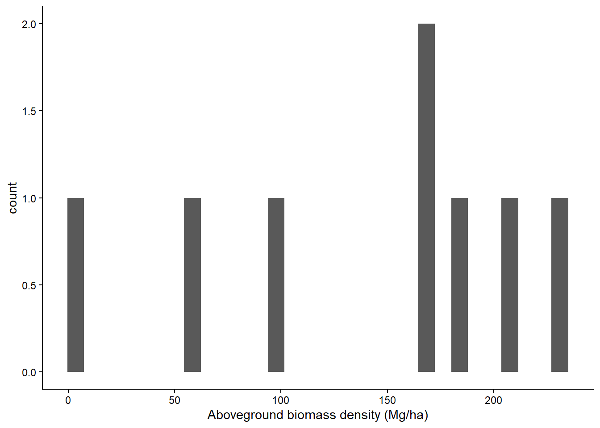
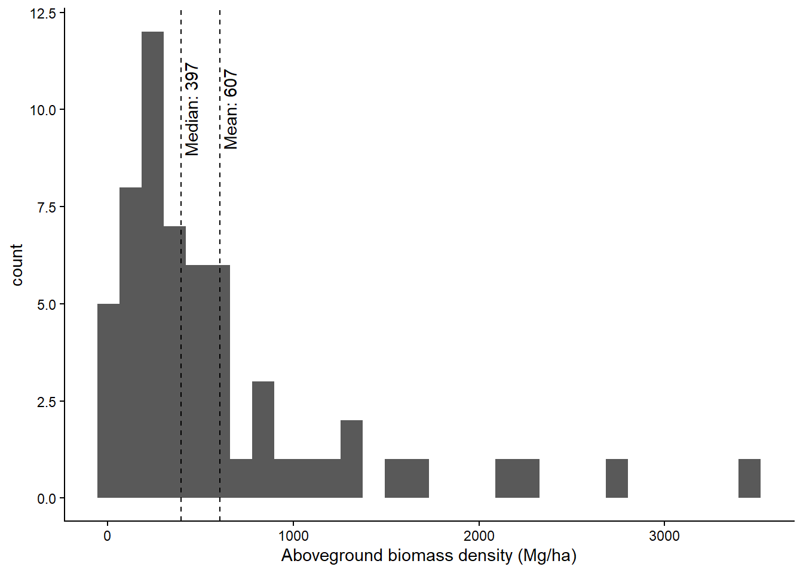
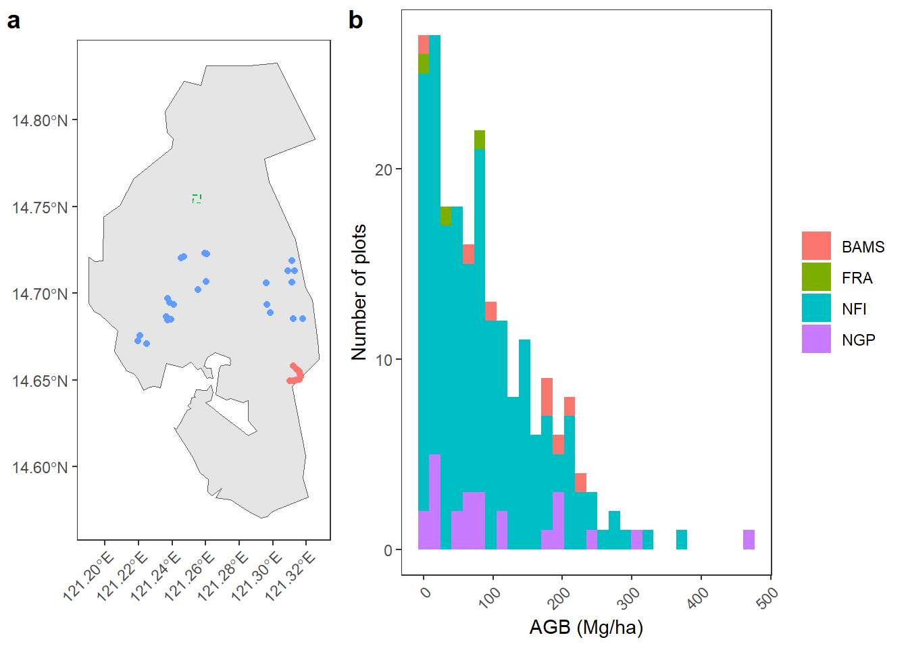
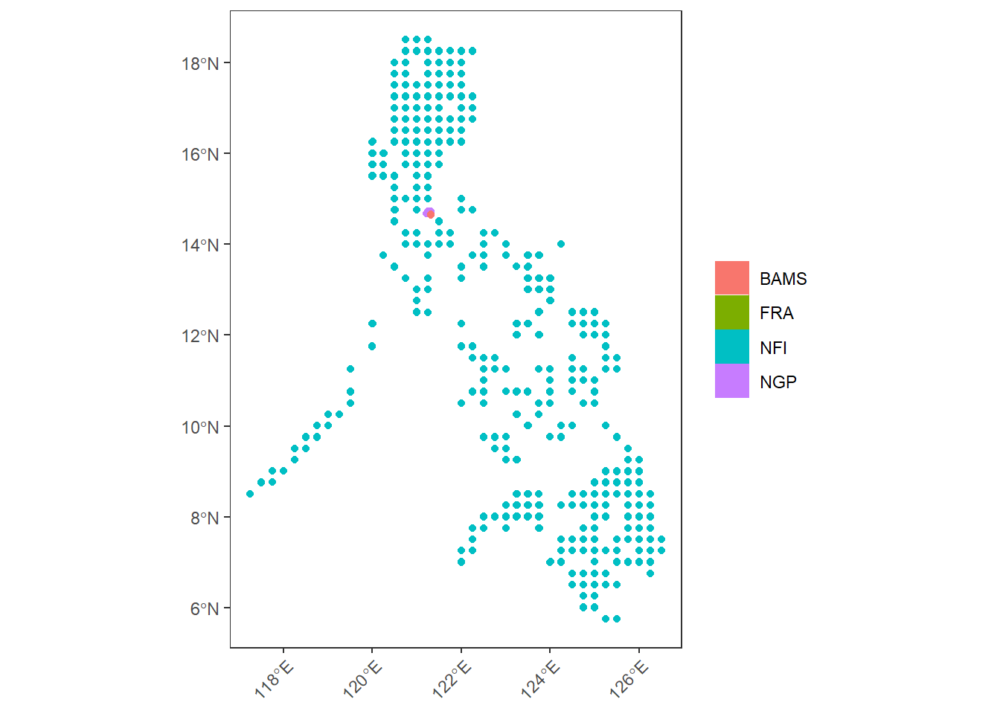
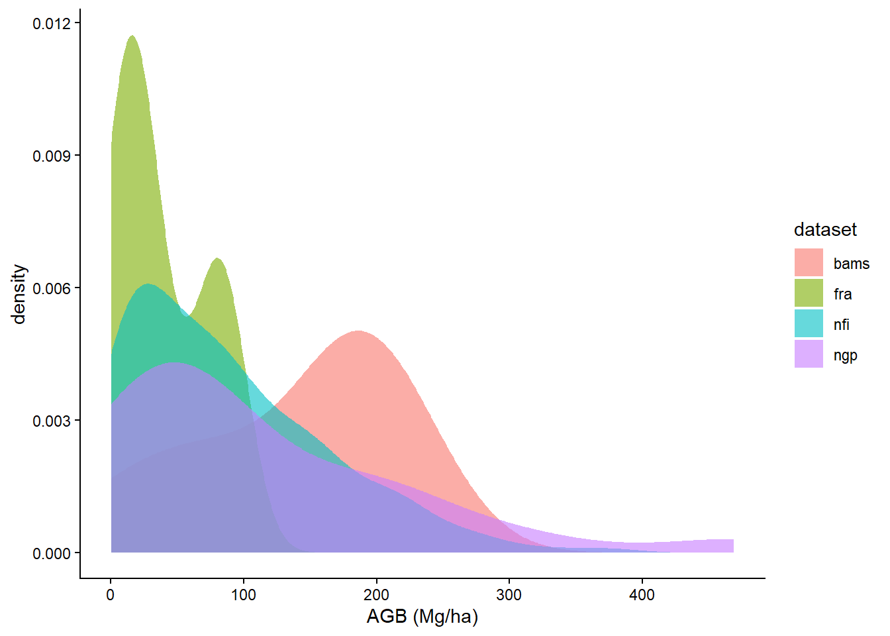
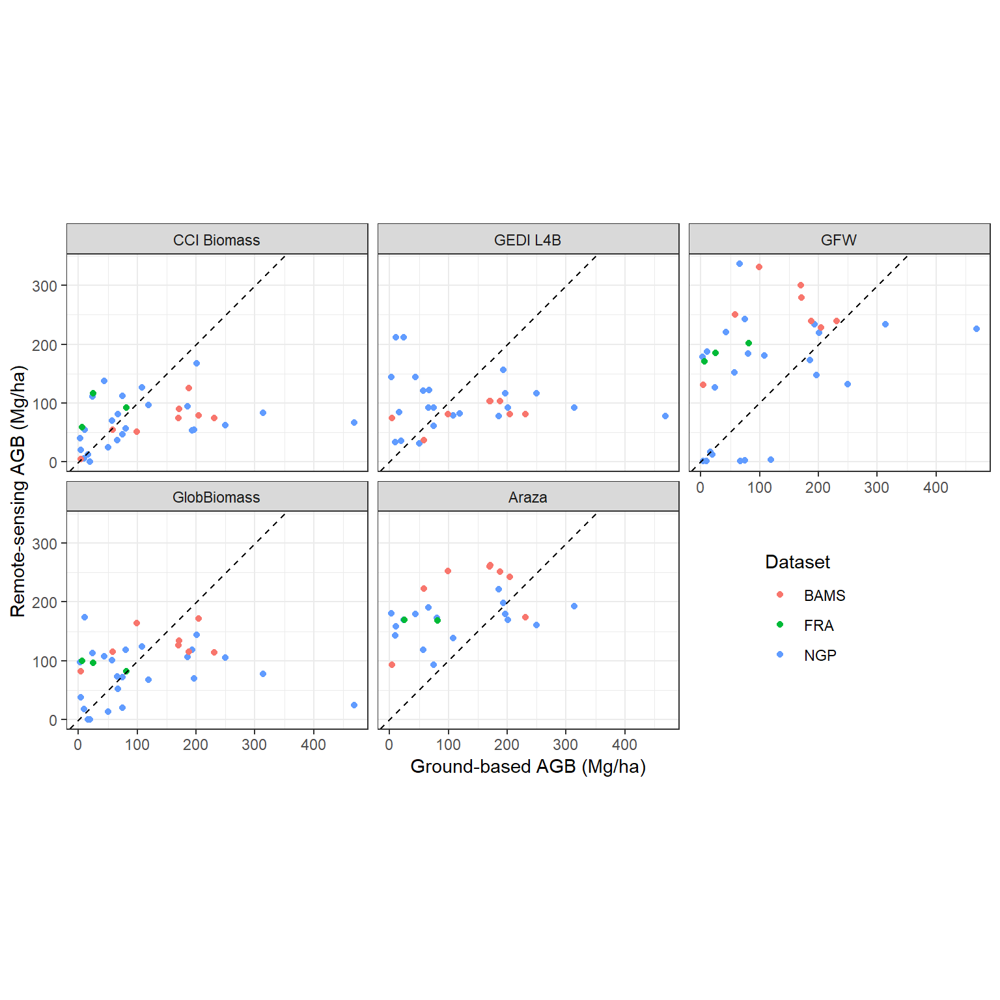
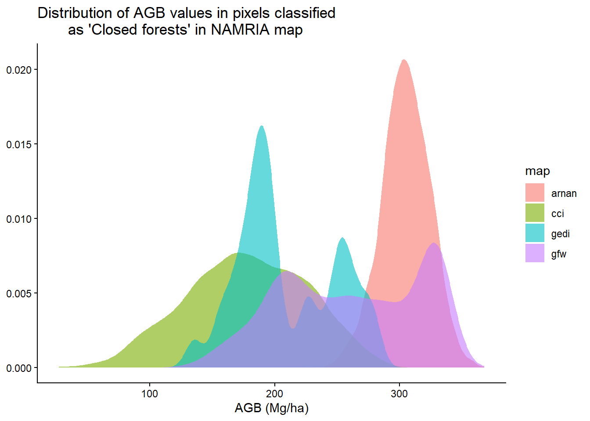

Code
library(terra)
library(sf)
library(docxtractr)
library(tidyverse)
library(readxl)library(terra)
library(sf)
library(docxtractr)
library(tidyverse)
library(readxl)area <- list.files("data/umrbpl/", full.names = TRUE, pattern = "shp$") |>
read_sf() |>
st_transform(crs = "EPSG:4326")These plots are from a reforestation project (secondary forests) in Upper Marikina. The plots are circular and 0.0079 ha in size. In 5-m radius subplots, all trees 5 to 20 cm DBH are measured; in 10-m radius subplots, all trees > 20 cm DBH are measured.
# NGP project
ngp <- list.files("data/inventories/", "NGP", full.names = TRUE) |>
read_docx() |>
docx_extract_tbl(1) |>
set_names(c(
"plot",
paste0(rep(c("agb", "agc"), 2), rep(c("_h", ""), each = 2))
)) |>
filter(!grepl("Average|Transect", plot)) |>
mutate(plot = paste0(rep(c(1:23, 27), each = 3), "_", rep(1:3, 24))) |>
mutate(across(contains("ag"), function(x) {
ifelse(is.na(as.numeric(x)), 0, as.numeric(x))
}))
location_ngp <-
read_excel("data/inventories/Carbon Stock and Sequestration Data.xlsx",
sheet = "NGP_Carbon Assessment", range = "B3:E84"
) |>
set_names(c("plot", "x", "y", "elev")) |>
mutate(transect = rep(1:27, each = 3)) |>
mutate(plot = paste(transect, plot, sep = "_")) |>
group_by(transect) |>
# correct problematic x and y values
mutate(
x = ifelse(abs(x - median(x)) > 1e4, median(x), x),
y = ifelse(abs(y - median(y)) > 1e4, median(y), y)
)
df_ngp <- left_join(ngp, location_ngp) |>
separate(plot, c("transect", "plot")) |>
group_by(transect) |>
summarise(agb = mean(agb_h), x = round(mean(x)), y = round(mean(y)))
sf_ngp <- df_ngp |>
st_as_sf(coords = c("x", "y"), crs = 32651) |> # check which CRS was used!!
st_transform(crs = "EPSG:4326")
df_ngp |>
ggplot(aes(agb)) +
geom_histogram() +
labs(x = "Aboveground biomass density (Mg/ha)") +
theme_classic()
These are square 20x20m plots.
# BAMS plots
bams <- list.files("data/inventories/", "BAMS", full.names = TRUE) |>
read_docx() |>
docx_extract_tbl(1) |>
set_names(c(
"plot",
paste0(rep(c("agb", "agc"), 2), rep(c("_h", ""), each = 2))
)) |>
mutate(across(contains("ag"), as.numeric))
location_bams <-
read_excel("data/inventories/Carbon Stock and Sequestration Data.xlsx",
sheet = "BAMS_Data", range = "A2:C38"
) |>
rename_with(tolower) |>
mutate(plot = as.character(rep(1:9, each = 4))) |>
separate(coordinates, c("x", "y")) |>
mutate(across(c("x", "y"), as.numeric)) |>
group_by(plot) |>
summarise(x = mean(x), y = mean(y))
df_bams <- left_join(bams, location_bams) |>
select(plot, x, y, agb_h) |>
rename(agb = agb_h)
df_bams |>
ggplot(aes(agb)) +
geom_histogram() +
labs(x = "Aboveground biomass density (Mg/ha)") +
theme_classic()
The FRA plots are composed of four 10-m radius plots where all trees >= xx cm DBH are measured, with 5-m nested subplots where all trees >= cm DBH are measured.
fra <- list.files("data/inventories/", "FRA", full.names = TRUE) |>
read_docx() |>
docx_extract_tbl(1) |>
set_names(c(
"track", "plot",
paste0(rep(c("agb", "agc"), 2), rep(c("_h", ""), each = 2))
)) |>
mutate(across(1:6, as.numeric)) |>
filter(!is.na(plot)) |>
fill(track, .direction = "down")
## FRA plots
sf_fra <- st_read("data/inventories/Subplots_Tract105/Subplots_Tract105.shp") |>
mutate(dataset = "fra") |>
mutate(plot = paste0("105_", gsub("Plot ", "", PLOT)))Reading layer `Subplots_Tract105' from data source
`D:\github\marikina_carbon\data\inventories\Subplots_Tract105\Subplots_Tract105.shp'
using driver `ESRI Shapefile'
Simple feature collection with 4 features and 3 fields
Geometry type: POLYGON
Dimension: XY
Bounding box: xmin: 311861.2 ymin: 1631644 xmax: 312383.6 ymax: 1632167
Projected CRS: WGS 84 / UTM zone 51Nfra |>
ggplot(aes(agb_h)) +
geom_histogram() +
geom_vline(xintercept = median(fra$agb_h), lty = 2) +
annotate(
geom = "text", x = median(fra$agb_h) + 50, y = 10, angle = 90,
label = paste("Median:", round(median(fra$agb_h)))
) +
geom_vline(xintercept = mean(fra$agb_h), lty = 2) +
annotate(
geom = "text", x = mean(fra$agb_h) + 50, y = 10, angle = 90,
label = paste("Mean:", round(mean(fra$agb_h)))
) +
labs(x = "Aboveground biomass density (Mg/ha)") +
theme_classic()
df_nfi <- read.csv("data/inventories/nfi_agb.csv") |>
mutate(dataset = "nfi") |>
mutate(plot = paste(tract, plot, sep = "_")) |>
select(-tract)
location_nfi <- bind_rows(
read_excel("data/inventories/td.03.xlsx"),
read.csv("data/inventories/td.14.csv")
) |>
mutate(plot = paste(tract, plot, sep = "_")) |>
select(plot, long, lat) |>
group_by(plot) |>
summarise(x = median(long), y = median(lat)) |>
mutate(dataset = "nfi")
df_nfi <- df_nfi |>
inner_join(location_nfi)method <- "tmf"
if (method == "namria") {
df_nfi$lc <- "data/LULC/egdmis_landcover2015_luzon_20210712/" |>
list.files("\\.shp", full.names = TRUE) |>
vect() |>
terra::extract(df_nfi[, c("x", "y")]) |>
select(agg12)
df_nfi |>
mutate(forest = !is.na(lc) & grepl("forest", tolower(lc$agg12))) |>
select(-lc) |>
write.csv("data/inventories/df_nfi.csv", row.names = FALSE)
} else if (method == "tmf") {
for (yr in c("2003", "2014")) {
for (coord1 in c("N20", "N10")) {
for (coord2 in c("E110", "E120")) {
file <- paste0(
"data/tmf/JRC_TMF_AnnualChange_v1_", yr,
"_ASI_ID76_", coord1, "_", coord2, ".tif"
)
if (!file.exists(file)) {
paste0(
"https://ies-ows.jrc.ec.europa.eu/iforce/tmf_v1/download.py?",
"type=tile&dataset=AnnualChange_", yr, "&lat=",
coord1, "&lon=", coord2
) |>
download.file(file, mode = "wb", method = "curl")
}
}
}
}
tmf03 <- list.files("data/tmf/", "2003", full.names = TRUE) |>
grep(pattern = "_N", value = TRUE) |>
lapply(rast) |>
sprc() |>
mosaic()
tmf14 <- list.files("data/tmf/", "2014", full.names = TRUE) |>
grep(pattern = "_N", value = TRUE) |>
lapply(rast) |>
sprc() |>
mosaic()
df_nfi |>
mutate(
tmf03 = terra::extract(tmf03, df_nfi[, c("x", "y")])$Dec2003,
tmf14 = terra::extract(tmf14, df_nfi[, c("x", "y")])$Dec2014
) |>
mutate(tmf = ifelse(year == 2003, tmf03, tmf14)) |>
mutate(forest = tmf %in% c(1, 2, 4)) |>
select(plot, year, x, y, forest) |>
write.csv("data/inventories/nfi_forest.csv", row.names = FALSE)
}clim <- rast("data/chelsa/climate_variables.tif") |>
terra::extract(location_nfi[, c("x", "y")], xy = TRUE) |>
select(-ID) |>
mutate(plot = location_nfi$plot)
clim$cluster <-
kmeans(
scale(clim[, names(rast("data/chelsa/climate_variables.tif"))]),
3, 25
)$cluster
# convex hull of upper marikina climate
area <- list.files("data/umrbpl/", full.names = TRUE, pattern = "shp$") |>
read_sf() |>
st_transform(crs = "EPSG:4326")
umrbpl <- rast("data/chelsa/climate_variables.tif") |>
crop(area) |>
mask(area) |>
values() |>
data.frame() |>
drop_na()
hull_idx <- chull(umrbpl$mean_temperature, umrbpl$mean_precipitation)
hull_idx <- c(hull_idx, hull_idx[1]) # close the polygon
hull <- umrbpl[hull_idx, ]
clim$inside <- sp::point.in.polygon(
clim$mean_temperature, clim$mean_precipitation,
hull$mean_temperature, hull$mean_precipitation
)
mutate(clim, inside = inside > 0) |>
select(plot, inside) |>
write.csv(file = "data/inventories/nfi_clim.csv", row.names = FALSE)df_nfi <- df_nfi |>
select(-x, -y) |>
inner_join(read.csv("data/inventories/nfi_forest.csv")) |>
inner_join(read.csv("data/inventories/nfi_clim.csv")) |>
filter(forest & inside)df_fra <- fra |>
mutate(dataset = "fra", plot = paste(track, plot, sep = "_")) |>
select(dataset, plot, agb_h) |>
rename(agb = agb_h) |>
subset(grepl("105", plot))
df_all <- df_ngp |>
rename(plot = transect) |>
mutate(dataset = "ngp") |>
bind_rows(mutate(df_bams, dataset = "bams")) |>
bind_rows(select(df_nfi, dataset, year, plot, agb)) |>
bind_rows(df_fra) |>
select(-x, -y)
location_ngp <- df_ngp |>
select(transect, x, y) |>
rename(plot = transect)
sf_all <-
bind_rows(list(ngp = location_ngp, bams = location_bams), .id = "dataset") |>
st_as_sf(coords = c("x", "y"), crs = 32651) |> # check which CRS was used!!
bind_rows(sf_fra) |>
st_transform(crs = "EPSG:4326") |>
bind_rows(st_as_sf(location_nfi, coords = c("x", "y"), crs = 4326))
# within UM
g1 <- ggplot() +
geom_sf(data = area) +
geom_sf(
data = st_crop(sf_all, area),
aes(col = toupper(dataset), fill = toupper(dataset))
) +
theme_bw() +
labs(col = NULL, fill = NULL) +
theme(
panel.grid = element_blank(),
axis.text.x = element_text(angle = 45, hjust = 1, vjust = 1),
legend.position = "none"
)
g2 <- ggplot(df_all) +
geom_histogram(aes(x = agb, fill = toupper(dataset))) +
labs(fill = NULL, y = "Number of plots", x = "AGB (Mg/ha)") +
theme_bw() +
theme(
panel.grid = element_blank(),
axis.text.x = element_text(angle = 45, hjust = 1, vjust = 1)
)
ggpubr::ggarrange(g1, g2, labels = c("a", "b"), widths = c(1.2, 2))
# NFI
sf_all |>
ggplot() +
geom_sf(aes(col = toupper(dataset), fill = toupper(dataset))) +
theme_bw() +
labs(col = NULL, fill = NULL) +
theme(
panel.grid = element_blank(),
axis.text.x = element_text(angle = 45, hjust = 1, vjust = 1)
)
df_all |>
ggplot(aes(agb, fill = dataset)) +
geom_density(alpha = 0.6, col = NA) +
theme_classic() +
labs(x = "AGB (Mg/ha)")
df_all <- df_all |>
filter(dataset != "nfi")diagnostic <- function(x, y) {
rmse <- signif(sqrt(mean((x - y)^2, na.rm = TRUE)), 3)
mape <- signif(mean(abs((x - y) / y), na.rm = TRUE) * 100, 3)
r2 <- signif(cor(x, y, use = "complete.obs")^2, 2)
bias <- signif(mean(x - y, na.rm = TRUE), 3)
cat(
"RMSE:", rmse,
"Mg/ha\nMAPE:", mape,
"%\nR²:", r2, "\nBias:",
bias, "Mg/ha"
)
}robust_extract <- function(coord, rst) {
if (nrow(coord) > 0) {
val <- terra::extract(rst, coord)[, 2] |> mean()
} else {
val <- NA
}
}We match the year of the inventory to the closest year of the map.
cci <- list.files("data/biomass/", "N20E120_ESACCI", full.names = TRUE) |>
rast()
names(cci) <- do.call(cbind, strsplit(names(cci), "-"))[7, ]
# check inventory year
df_all <- mutate(df_all, year = as.numeric(ifelse(is.na(year), 2010, year)))
df_all$cci_carbon <- sapply(seq_len(nrow(df_all)), function(i) {
closest <- which.min(abs(as.numeric(names(cci)) - df_all$year[i]))
sf_all |>
filter(dataset == df_all$dataset[i] & plot == df_all$plot[i]) |>
robust_extract(cci[[closest]])
})
diagnostic(df_all$cci_carbon, df_all$agb)RMSE: 107 Mg/ha
MAPE: 158 %
R²: 0.095
Bias: -41 Mg/hagfw <- list.files("data/biomass/", "harris", full.names = TRUE) |>
rast()
df_all$gfw_carbon <- sapply(seq_len(nrow(df_all)), function(i) {
sf_all |>
filter(dataset == df_all$dataset[i] & plot == df_all$plot[i]) |>
robust_extract(gfw)
})
diagnostic(df_all$gfw_carbon, df_all$agb)RMSE: 127 Mg/ha
MAPE: 573 %
R²: 0.14
Bias: 57.4 Mg/haglob <- list.files("data/biomass/N40E100_agb/", "agb\\.", full.names = TRUE) |>
rast()
df_all$glob_carbon <- sapply(seq_len(nrow(df_all)), function(i) {
sf_all |>
filter(dataset == df_all$dataset[i] & plot == df_all$plot[i]) |>
robust_extract(glob)
})
diagnostic(df_all$glob_carbon, df_all$agb)RMSE: 109 Mg/ha
MAPE: 356 %
R²: 0.019
Bias: -21.1 Mg/hagedi <- rast("data/biomass/GEDI04_B_philippines.tif")[[2]]
df_all$gedi_carbon <- sapply(seq_len(nrow(df_all)), function(i) {
sf_all |>
filter(dataset == df_all$dataset[i] & plot == df_all$plot[i]) |>
robust_extract(gedi)
})
diagnostic(df_all$gedi_carbon, df_all$agb)RMSE: 120 Mg/ha
MAPE: 423 %
R²: 0.0058
Bias: -24.5 Mg/haphmap <- "data/biomass/agb_ph_2015_rf_tc10masked.tif" |>
rast()
df_all$ph_carbon <- sapply(seq_len(nrow(df_all)), function(i) {
sf_all |>
filter(dataset == df_all$dataset[i] & plot == df_all$plot[i]) |>
robust_extract(phmap)
})
diagnostic(df_all$ph_carbon, df_all$agb)RMSE: 103 Mg/ha
MAPE: 601 %
R²: 0.18
Bias: 65.9 Mg/hamap_labs <- c(
"cci" = "CCI Biomass", "gfw" = "GFW",
"glob" = "GlobBiomass", "ph" = "Araza",
"gedi" = "GEDI L4B"
)
df_all |>
pivot_longer(cols = contains("_carbon")) |>
filter(!is.na(value)) |>
mutate(name = gsub("_carbon", "", name)) |>
ggplot(aes(agb, value)) +
geom_point(aes(col = toupper(dataset))) +
facet_wrap(~name, labeller = as_labeller(map_labs)) +
labs(
x = "Ground-based AGB (Mg/ha)", y = "Remote-sensing AGB (Mg/ha)",
col = "Dataset"
) +
geom_abline(slope = 1, intercept = 0, lty = 2) +
coord_equal() +
theme_bw() +
theme(legend.position = "inside", legend.position.inside = c(0.8, 0.25))
df_all |>
pivot_longer(cols = contains("carbon"), names_to = "map") |>
group_by(map) |>
summarise(
rmse = signif(sqrt(mean((value - agb)^2, na.rm = TRUE)), 3),
mape = signif(mean(abs((value - agb) / agb), na.rm = TRUE) * 100, 3),
r2 = signif(cor(value, agb, use = "complete.obs")^2, 2),
bias = signif(mean(value - agb, na.rm = TRUE), 3)
) |>
write.csv("C:/Users/piponiot-laroche/Downloads/metrics.csv",
row.names = FALSE
)namria_closed <- "data/LULC/2020_Land Cover/2020_Land Cover_UMRBPL.shp" |>
read_sf() |>
filter(CLASS_NAME == "Closed Forest") |>
st_transform(4326)
cci <-
"data/biomass/umrbpl_ESACCI-BIOMASS-L4-AGB-MERGED-100m-2020-fv6.0.tiff" |>
rast() |> crop(namria_closed) |> mask(namria_closed)
gfw <- rast("data/biomass/harris_carbon_2000.tif") |>
crop(namria_closed) |> mask(namria_closed)
arnan <- rast("data/biomass/agb_ph_2015_rf_tc10masked.tif")[[1]] |>
crop(namria_closed) |> mask(namria_closed)
gedi <- rast("data/biomass/GEDI04_B_philippines.tif")[[2]] |>
crop(namria_closed) |> mask(namria_closed)
coords <- data.frame(
lon = runif(1e4, ext(namria_closed)[1], ext(namria_closed)[2]),
lat = runif(1e4, ext(namria_closed)[3], ext(namria_closed)[4])
)
list("cci", "gfw", "arnan", "gedi") |>
lapply(function(nmrast) {
terra::extract(get(nmrast), coords, xy = TRUE)[, 2:4] |>
set_names("agb", "x", "y") |>
mutate(map = nmrast)
}) |> bind_rows() |> drop_na() |>
ggplot(aes(agb, fill = map)) +
geom_density(alpha = 0.6, col = NA) +
labs(x = "AGB (Mg/ha)", y = NULL,
title = "Distribution of AGB values in pixels classified
as 'Closed forests' in NAMRIA map") +
theme_classic()
The final map chosen is …